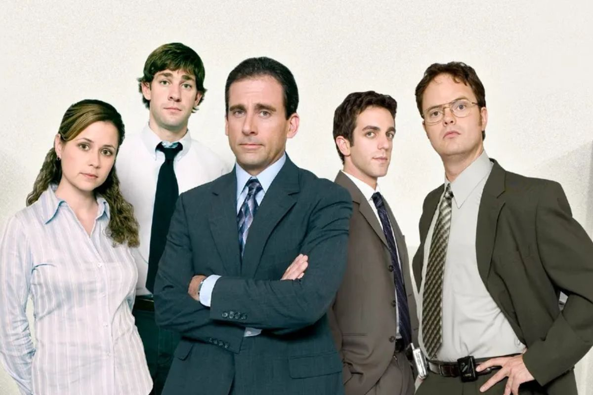

Resumo Esta versão americana de "The Office" é uma comédia que gira em torno do cotidiano de um escritório. Esta sátira descreve a vida dos funcionários da fábrica de papel Dunder Miffin, situada em Scranton, na Pensilvânia. Entre os personagens está Michael Scout (Steve Carell), o gerente regional da empresa. Solteiro e fanfarrão, ele acredita ser o homem mais bonito do escritório, além de uma fonte de sabedoria e o melhor amigo de seus funcionários. Pam Beesly (Jenna Fischer) é a simpática recepcionista que o tolera. Alguns dos melhores momentos são as conversas que ela tem com o representante de vendas Jim Halpert (John Krasinski); com Dwight Schrute (Rainn Wilson), o arrogante assistente de Michael; e com o auxiliar Ryan Howard, que passa a Michael a visão oficial dos fatos..
